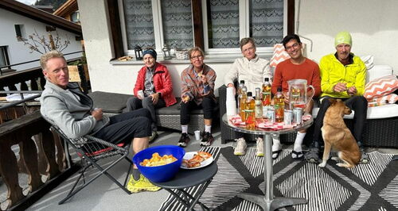

Menü
Alpinrunner
Team
Agenda
Laufstrecken
Dies und Das
News von Alpinrunners
Alpinrunner - Shop
Marktplatz
← News
Klosters Runde
11.10.2026 20:50
von Marco Jäger
11. Oktober
Klosters Runde mit Silvia
zum Bericht
